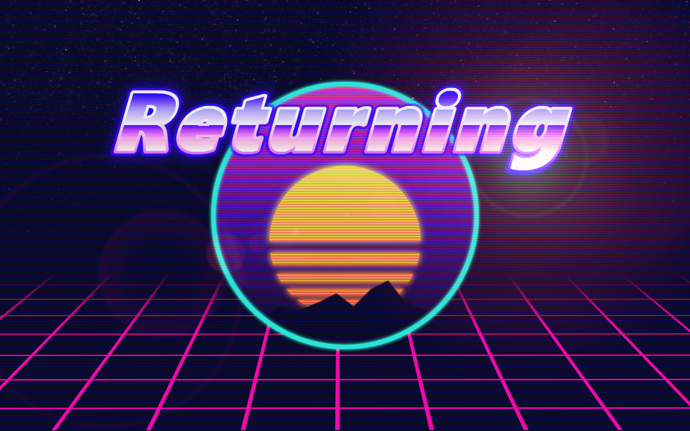
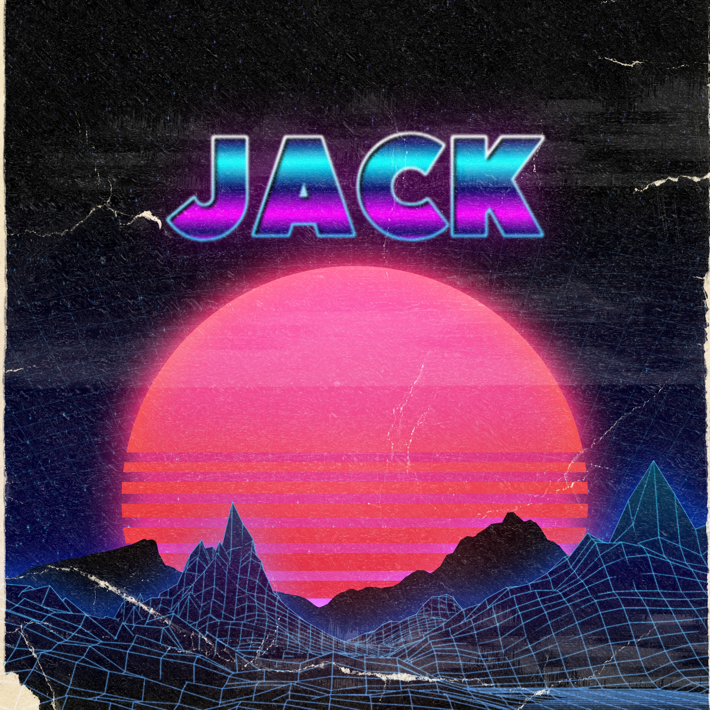

About JackL
JackL consists of Jack Lindgren, his two cats, and his biggest critic, his wife
Jack Lindgren started producing music in 2018.
His music spans many genres, with his preferred genres being synthwave and midtempo.
Where many people say you should be inovative with your music JackL takes a revolutionary
new approach and makes music that sounds exactly the same as everyone else's.
It's this decision to add absolutely no style and originality to his music that makes him such a stand out artist.